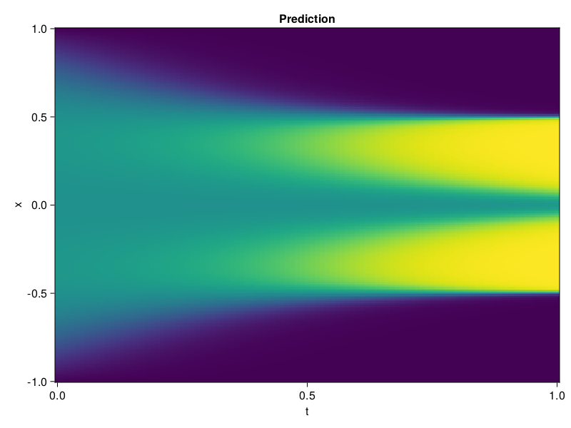

Allen-Cahn Equation with Sequential Training
In this tutorial we are going to solve the Allen-Cahn equation with periodic boundary condition from $t=0$ to $t=1$. The traning process is split into four stages, namely $t\in [0,0.25]$, $t\in [0.0,0.5]$, $t\in [0.0,0.75]$ and $t\in [0.0, 1.0]$.
using ModelingToolkit, IntervalSets
using Sophon
using Optimization, OptimizationOptimJL
@parameters t, x
@variables u(..)
Dₓ = Differential(x)
Dₓ² = Differential(x)^2
Dₜ = Differential(t)
eq = Dₜ(u(x, t)) - 0.0001 * Dₓ²(u(x, t)) + 5 * u(x,t) * (abs2(u(x,t)) - 1.0) ~ 0.0
domain = [x ∈ -1.0..1.0, t ∈ 0.0..0.25]
bcs = [u(x,0) ~ x^2 * cospi(x),
u(-1,t) ~ u(1,t)]
@named allen = PDESystem(eq, bcs, domain, [x, t], [u(x, t)])\[ \begin{align} - 0.0001 \frac{\mathrm{d}}{\mathrm{d}x} \frac{\mathrm{d}}{\mathrm{d}x} u\left( x, t \right) + 5 \left( -1 + \left|u\left( x, t \right)\right|^{2} \right) u\left( x, t \right) + \frac{\mathrm{d}}{\mathrm{d}t} u\left( x, t \right) =& 0 \end{align} \]
Then we define the neural net, the sampler, and the training strategy.
chain = FullyConnected(2, 1, tanh; hidden_dims=16, num_layers=4)
pinn = PINN(chain)
sampler = QuasiRandomSampler(500, (300, 100))
strategy = NonAdaptiveTraining(1, (50, 1))
prob = Sophon.discretize(allen, pinn, sampler, strategy)OptimizationProblem. In-place: true
u0: ComponentVector{Float64}(layer_1 = (weight = [-1.174116849899292 1.3581082820892334; 1.4115694761276245 1.3038125038146973; … ; 0.7959817051887512 -0.6513234376907349; 1.7510409355163574 -1.9406514167785645], bias = [0.0; 0.0; … ; 0.0; 0.0;;]), layer_2 = (weight = [-0.06040273234248161 0.384680837392807 … -0.3449968993663788 0.5210893154144287; -0.4479571282863617 -0.2897851765155792 … 0.574997067451477 -0.012433500960469246; … ; 0.24872981011867523 0.2863014042377472 … 0.26270386576652527 0.27894970774650574; -0.36805224418640137 0.1765512079000473 … -0.3114379346370697 0.3095313012599945], bias = [0.0; 0.0; … ; 0.0; 0.0;;]), layer_3 = (weight = [0.700308084487915 -0.5728299021720886 … -0.02525164932012558 -0.074752077460289; -0.34481003880500793 0.47303420305252075 … -0.41167643666267395 -0.6520105004310608; … ; 0.30922064185142517 -0.30947598814964294 … -0.2707258462905884 -0.24053078889846802; 0.5897509455680847 0.39561548829078674 … -0.6560757160186768 0.2866099178791046], bias = [0.0; 0.0; … ; 0.0; 0.0;;]), layer_4 = (weight = [-0.1038457378745079 0.07702013850212097 … -0.27822619676589966 0.6783025860786438; -0.6190615296363831 0.3632945120334625 … 0.45010507106781006 -0.028142407536506653; … ; 0.011290136724710464 0.40124955773353577 … 0.4084585905075073 -0.7132424712181091; -0.3050011992454529 -0.33863312005996704 … 0.244898721575737 0.5734507441520691], bias = [0.0; 0.0; … ; 0.0; 0.0;;]), layer_5 = (weight = [0.6191763877868652 -0.30716171860694885 … 0.532575249671936 0.10543741285800934], bias = [0.0;;]))We solve the equation sequentially in time.
function train(allen, prob, sampler, strategy)
bfgs = BFGS()
res = Optimization.solve(prob, bfgs; maxiters=2000)
for tmax in [0.5, 0.75, 1.0]
allen.domain[2] = t ∈ 0.0..tmax
data = Sophon.sample(allen, sampler)
prob = remake(prob; u0=res.u, p=data)
res = Optimization.solve(prob, bfgs; maxiters=2000)
end
return res
end
res = train(allen, prob, sampler, strategy)u: ComponentVector{Float64}(layer_1 = (weight = [-1.1560657360003088 1.0173827397069866; 1.6621653084278316 1.1797047409679147; … ; 0.37032387187339194 -0.554362885253643; 3.4112556418530326 -1.2183211601229738], bias = [-1.879424704184068; -0.6356637155649775; … ; 0.08131658838172243; -0.23755364754851824;;]), layer_2 = (weight = [-0.19175600690206945 0.8087384708259697 … -0.30721285315098634 0.3403990985768737; -0.8828367102911894 -0.5697631874263978 … 0.7168374083814141 -0.07625787917798976; … ; 0.028322553141556964 -0.13663781520788146 … 0.2849372059615066 2.4377317088272044; -0.15994184025566074 0.41809903714646557 … -0.3079215685033394 0.5434165656935195], bias = [0.2670614459281461; -0.29328889649570455; … ; -0.3859363131414602; -0.6304664686772575;;]), layer_3 = (weight = [0.7612864633338379 -0.8077170857415956 … 0.15269523732170168 0.03417281541875471; -0.3258659146435387 0.8311284757353445 … -0.7022926258426854 -0.3987499910000304; … ; 0.8639645557554433 -0.11199320328357437 … -0.36456663671783046 -0.02232540326625043; 0.4583890748889366 1.1492297005033074 … -1.7289475563473413 0.2809082185414611], bias = [-0.1740473491657006; 0.05714907824824371; … ; 0.2698690592733503; -0.13137967805226372;;]), layer_4 = (weight = [0.06957664554449774 0.2426401348047601 … -0.27660215226439544 0.7439893609796542; -0.48474674283632085 0.06897015166063031 … -0.15140104264943322 -0.036429690431416493; … ; 0.8282410999979384 0.3325404507427534 … 0.14499225995044365 -0.46717485496883193; -0.20262686561258672 -0.18298422327000732 … 0.6672102295987579 0.4470908426616632], bias = [-0.3197180227057537; 0.26260783462805615; … ; -0.02671774458074609; 0.061190937560902936;;]), layer_5 = (weight = [0.23902543150749642 -0.34766539533195195 … 0.3391749384943578 -0.07756192892660584], bias = [-0.5366333054161703;;]))Let's plot the result.
using CairoMakie
phi = pinn.phi
xs, ts = [infimum(d.domain):0.01:supremum(d.domain) for d in allen.domain]
axis = (xlabel="t", ylabel="x", title="Prediction")
u_pred = [sum(pinn.phi([x, t], res.u)) for x in xs, t in ts]
fig, ax, hm = heatmap(ts, xs, u_pred', axis=axis)